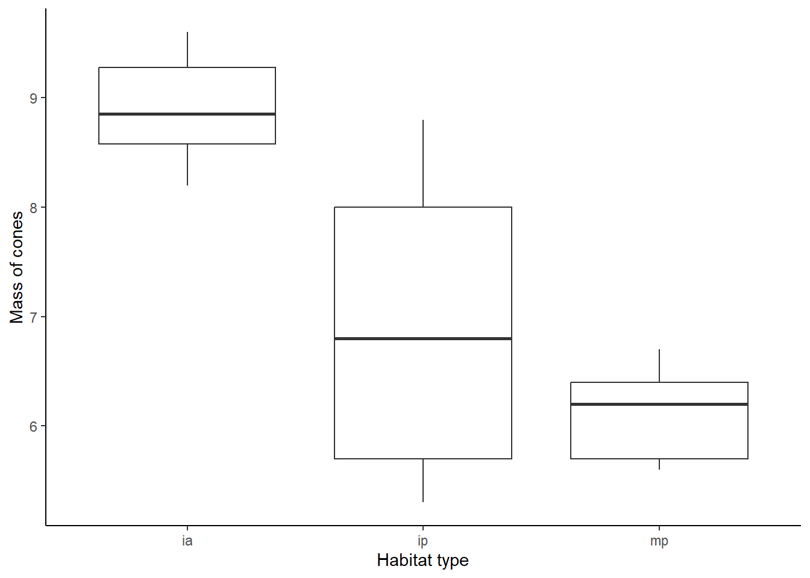

In this lesson, you will move on from t-tests to ANOVAs. The ANOVA (Analysis of Variance) test can be used for similar data types as the t-test: a categorical independent variable and a continuous dependent variable. However, ANOVAs can be used when your independent variable has more than two categories. ANOVAs can, in fact, also be used when your indpendent variable has only two categories, and you would get the same results that you would with a t-test.
The one-way ANOVA is used when we have a single indpendent variable that we would like to test. In future lessons, we will cover how to handle more than one independent variable. For this test, we will use an related to lodgepole pine. Lodgepole pine trees can be found in habitats with different predators, which may have influenced the evolution of their cone morphology. In this example, we will test for differences in the mass of lodgepole pine cones in three different habitats: islands with no squirrel, islands with squirrels, and the mainland (which also has squirrels).
We’ll start off by building our null and alternative models for this question. The approach is exactly the same as the approach we used for the t-test.
First, load the data set. Be sure your working directory is set to the location of the lodgepole data file.
cone <- read.csv("lodgepole.csv")Next, build the two models.
cone_null <- lm(conesize ~ 1, cone)
cone_alt <- lm(conesize ~ type, cone)To view the output of the model, just type the name of the model. For the null model, it should be pretty simple: just an intercept coefficient representing the overall mean cone mass, regarless of the habitat type. For the alternative model, we now have three coefficients: an intercept, a typeip, and a typemp coefficient. These three values tell us the means for each habitat. When R runs a linear model with a variable that has multiple categories, it will automatically choose one of the categories as the baseline. The mean for this baseline category is the intercept coefficient. In this case, R used the “ia” category as the baseline. We can tell because the other coefficients are for the type “ip” and the type “mp”. The mean mass of cones on the islands without squirrels (ia) is therefore 8.9. To calculate the means for the other group, you add the value of the coefficient for that group to the intercept. To calculate the mean mass of cones on islands with squirrels (ip), for example, you would add 8.9 and -1.98.
Now, let’s create a graph to visualize our data. A boxplot is a good option because, like for the t-test example, we have a categorical independent variable and a continuous dependent variable.
ggplot(cone, aes(x=type, y=conesize)) +
geom_boxplot() +
labs(x="Habitat type", y="Mass of cones") +
theme_classic()
As usual, we will start off by analyzing the data using a frequentist
approach. The syntax for running an ANOVA is similar to the other tests
we have run, but this time, we will use the aov function.
The arguments are still the formula for the model (dependent variable on
the left, independent variable on the right) and the data frame.
cone_ANOVA <- aov(conesize ~ type, data = cone)To view the output, use the summary function.
summary(cone_ANOVA)## Df Sum Sq Mean Sq F value Pr(>F)
## type 2 22.84 11.421 13.38 0.000698 ***
## Residuals 13 11.10 0.854
## ---
## Signif. codes: 0 '***' 0.001 '**' 0.01 '*' 0.05 '.' 0.1 ' ' 1When you view the output, the most important line is the first row of the output table, in this case labeled “type”, which was our independent variable. If you look at this row, you will see the F statistic and the p-value for the test. Based on these values, would your reject or accept the null hypothesis? What does this tell you about the effect of habitat on cone mass?
Next we will use a likelihood-based approach to test the same question. Good news! The syntax for this is exactly the same as it was for the t-test. That’s because t-tests and ANOVAs are both types of linear models.
We already build our null and alternative models for this problem
earlier in the lesson, so we can jump right into using the
AIC function to compare the models.
AIC(cone_null, cone_alt)## df AIC
## cone_null 2 61.43694
## cone_alt 4 47.54997Based on this output, what would you conclude about the effect of habitat on cone size?
But wait! These tests only tells us that cone size is different in at least one of our categories! How do we know which categories actually differ? This is where post-hoc tests come in. Note that we will only use a classical frequentist approach for the post-hoc tests. This is because there are subtle differences in the main goals of the analysis between a classical frequentist approach and a likelihood approach. In a likelihood approach, we are more interested in selecting the best model, rather than drawing specific inferences about individual variables. This is something to keep in mind when choosing the best method for your question. If you are specifically interested in testing the differences between multiple categories, the classical frequentist approach is the better approach to use.
We will now run a Tukey’s HSD test, which will do pairwise
comparisons between each of our three categories. The Tukey’s HSD test
will automatically adjust the p-values to account for the fact that we
are making multiple comparisons. The syntax for the test is simple. We
will use the TukeyHSD function, and the argument is the
model we created when we ran the ANOVA using the frequentist
approach.
TukeyHSD(cone_ANOVA)## Tukey multiple comparisons of means
## 95% family-wise confidence level
##
## Fit: aov(formula = conesize ~ type, data = cone)
##
## $type
## diff lwr upr p adj
## ip-ia -1.98 -3.457145 -0.5028551 0.0094626
## mp-ia -2.78 -4.257145 -1.3028551 0.0006982
## mp-ip -0.80 -2.342828 0.7428275 0.3845461The output you see is the pairwise comparison between each category. The first column of the table shows you which two categories are being compared (ia = islands with no squirrels, ip = islands with squirrels, mp = mainland). The second column tells you the difference in the means of the two categories. The third and forth columns show the lower and upper bounds of the 95% confidence intervals around the mean. Finally, the last column gives you the p-values for the pairwise comparisons.
Based on the p-values, which pairs of habitat types had significant differences in their cone size?
A researcher is interested in comparing the egg size of four different species of birds. The data on the egg length of each species is in the cuckoo.csv data file.